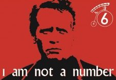
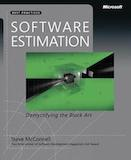

Estimate Everything
Many years ago I was having a final interview with the CEO of a company where I very much wanted to work. It went well and at the end of the meeting he asked my salary expectation. I was young and foolish, I knew I could ask for a lot more than I was already getting but I didn’t want to lose the opportunity by asking for too much. Rather than pick a number at random, I said I didn’t know. He then taught me a lesson in estimation which I will never forget. First he asked about my current salary. Then he asked what I would gain or lose from the new job compared to the previous one, including perks and options but also intangibles like the opportunity to work with experts in the field, new challenges, experience, the commute, company values, flexible working hours, etc. Together1 we roughly estimated what those things might be worth in monetary terms. With this information he sketched a graph on the whiteboard and projected an approximate figure which, as it happens, worked for both of us.
1 Incidentally he also taught me in that moment that negotiating an agreement is not (or should not) be seen winning or losing but rather about finding a fair reward for both parties.
What this taught me is that estimation is a skill. Literally anything can be estimated, and we have powerful tools at our disposal to help us, but estimation is both misunderstood and misused.

An estimate is not what most people think it is
The most important thing to consider is that an estimation is not a number, it must have at the very least two components from which both the best guess and the level of confidence can be gleaned. The best guess is also misleadingly called the expected value and is what people usually concentrate on but it means very little if stated without the qualification of confidence.
One of the things that puts many people off a more rigorous approach to estimates is their association with statistics and indeed an estimate is best represented mathematically as a probability distribution. However there are other ways to communicate estimates one of the easiest being confidence intervals.
For example, I could say that a job will take between 1 week and 2 weeks with a high level of confidence2. I could also say that it will take between 10 and 12 days with lower confidence. There are simple rules of thumb for working these things out. In most practical cases you get an intuition for the level of confidence, the key is to communicate it as a constituent part of the estimate along with the best guess.
2 100% confidence is virtually impossible so in many fields we use 95% as a yardstick for high confidence.
3 Notice that we are not saying anything here about accuracy. I’m assuming you already understand the difference between precision and accuracy. It’s fundamental in any discussion about estimation.
The level of confidence can be broken down still further. I think of it as a rectangle with fixed area where one side is the precision of the estimation and the other is the speed with which it can be produced3. As one increases the other must decrease. So when we produce a quick estimation then the precision will be relatively low. Likewise when we want more precision we have to take more time to produce it. Just common sense™.
For some reason people are not very good at recognising this. For decades we’ve been estimating software projects often without specifying the precision at all. Or worse, implying a false precision by using inappropriately precise numbers. It’s no wonder estimates get such a bad press.

I’ve worked on projects where estimates were calculated with very high precision and attached with guarantees. The precision was valued above speed. The estimates were hardly ever accurate and a good deal of time was spent on the details which became invalid as soon as requirements changed. This is one of the drawbacks of outsourcing in its commonest form.
For every action there is an equal reaction and so there is a movement to stop estimating altogether because it wastes time. Personally I believe that #NoEstimates is just another form of estimation4 where speed is valued above precision, the implication being that the project has some implicit, imprecise idea of the magnitude of what needs to be done and its relation to expected return. If that is true then this kind of estimation makes sense, frequently it does not.
4 Edit: In fact better considered as the opposite end of a spectrum of estimating.
Estimations are fundamental to making business decisions and therefore as conscientious engineers we should make estimation skills as important as other technical skills. We should have an eye for both precision and speed and know when to trade one for the other, just as we do in other areas. We should also understand the business context and know the appropriate level of confidence. We should also be able to communicate the trade-offs to the people who make the decisions.
First approximations
Now that we know what an estimation is, it may be surprising to see just how easy they are. In fact you can nearly always have an intuition about how long a task will take together with its precision with hardly any requirements at all. Information is always available from context and order-of-magnitude approximations have immediate value. For example how long would it take to do a DIY project on my house? Without any more details you can make an educated guess: in the order of days or weeks. Certainly not minutes and seconds, and probably not years or decades. Of course this guess has low precision. If I then told you that I had just bought a paintbrush and a tin of paint then the precision of your estimation would improve dramatically. In any case you’d be able to say with some confidence if I’d be finished by Christmas.
From Steve McConnell’s reaction to the #NoEstimates movement5: > Is showing someone several pictures of kitchen remodels that have been completed for $30,000 and implying that the next kitchen remodel can be completed for $30,000 estimation? Yes, it is.
5 The entire article is recommended reading.
The same for software. As software consultants we’ve all been asked seemingly absurd questions like “How long will it take to create my website?” but with just a couple of pieces of context we won’t have a highly precise estimate but we can know if it’s worth continuing the conversation. This is also estimation, in fact it is one of the best kinds.
There is a famous problem attributed to Enrico Fermi where you are asked to estimate the number of piano tuners in Chicago. Using order-of-magnitude estimation and the law of large numbers it is possible to be quite accurate.
Another technique could be called triangulation, that is estimating quickly in several different ways to narrow down the options, increasing confidence. Drawing lines on a graph and seeing where they cross is one kind of triangulation, so is comparing the estimations of more than one person. Baysian inference is a more sophisticated kind of triangulation.
More information allows us to increase our precision. That is normal, inevitable and to be embraced. Requirements change and estimates change accordingly. New decisions are based on new information. This is one of the strengths of agile methodologies over waterfall based ones. Iterations give feedback and improve estimation precision enabling finer-grained business decisions to be made.
These techniques are part of the skill of estimation that can to be learnt and there is much value in learning it.
In conclusion
Estimation is not the enemy. In fact as we have seen it is easier than you think and we do it subconsciously all the time. By ensuring we keep tabs not only on the best guess but also our level of confidence in that guess we can harness them and control them.